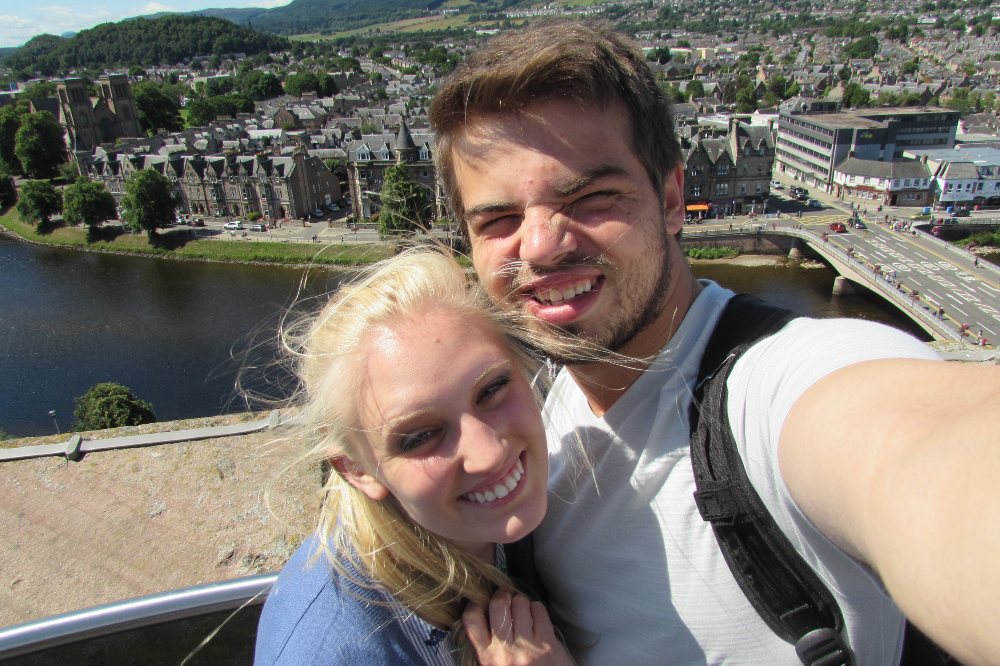
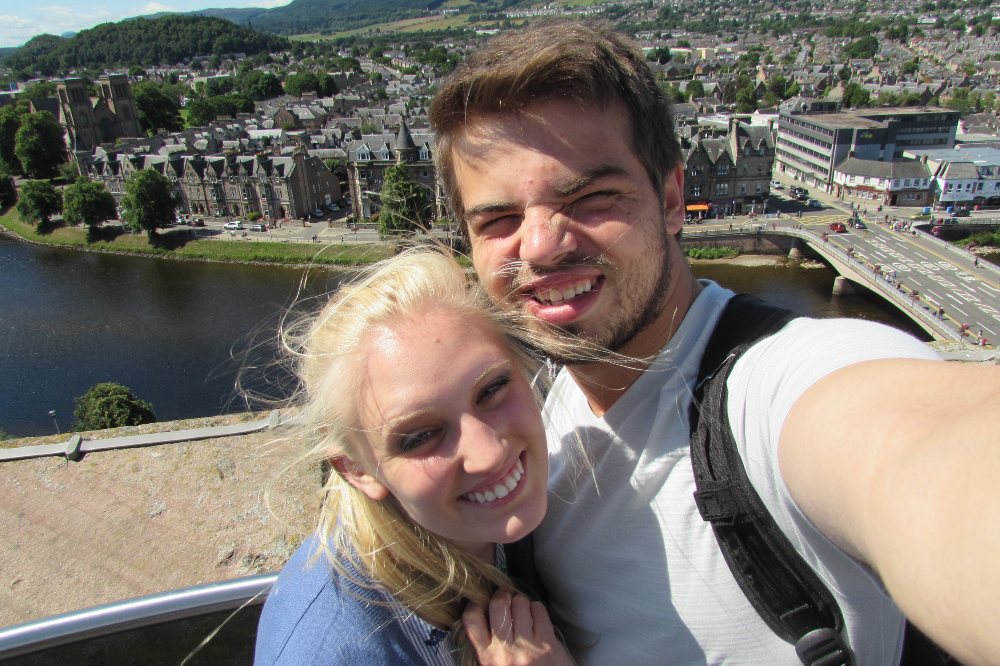

About Me:
 

I live in Apple Valley Minnesota, a suburb of Minneapolis-St.Paul. I love learning new things and applying myself to what I do. I am a quick and passionate study. I studied social sciences for my bachelor’s. Now I am applying my passion for innovation and creativity as a designer. This variety of experiences helps me to understand each situation from a different perspective. I am at my happiest when I am faced with a unique challenge that forces me to stretch my understanding and apply myself in a new way. I look forward to the prospect of working with talented people and learning from them. I am a developer most familiar with web-development with some experience in Python. I have found the complexity and pure system management when working on the backend to be very enjoyable.
In my spare time, I love enjoying the outdoors (when it’s not absolutely frigid outside). I do this by taking camping trips to the Boundary Waters in northern Minnesota. There are few things as enjoyable as going on trips to new places with my wonderful wife. That is when travel was a thing before Covid-19. On the bright side, I now have a lot of time to get back to playing video games. I love games of all sorts especially the board variety. I am looking forward to getting together with friends again.